选择“菜谱管理”，显示菜谱管理的功能界面。在“菜谱管理”中，您可以- 浏览餐厅目前菜谱的详细信息
- 添加新的菜品
- 修改现有的菜品
- 删除不需要的菜品
- 查看餐厅的点菜排名
如下图所示：
|
| 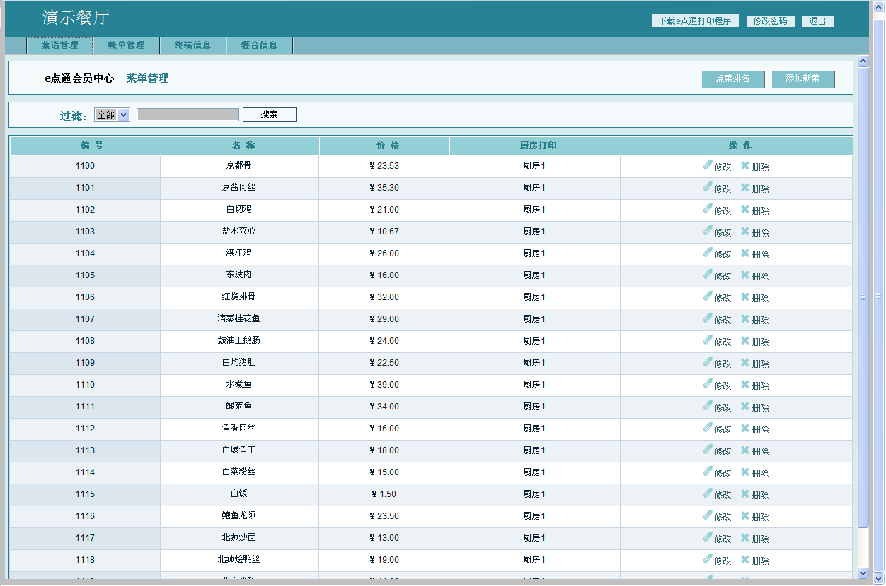 |
|
|
| 选择“添加新菜”，弹出新菜品的输入框，输入“编号”、“菜名”、“价格”，在“厨房”的下拉列表中选择菜品所在的厨房： |
| 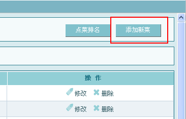 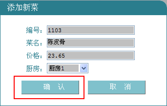 |
选择“确认”，会员中心提示保存成功，完成添加新菜。
提示：
输入的编号请确保没有跟已有的菜品编号相冲突，否则会提示您“编号已存在”的错误信息，而不能完成添加新菜的功能。 |
|
|
| 选中你想要删除的菜品，在对应的操作列中选择“删除”，弹出确认提示框，选择“确定”，会员中心弹出提示框提示删除成功，如下图所示： |
| 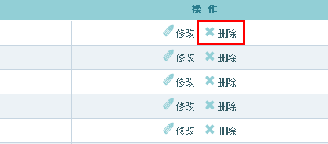 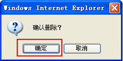 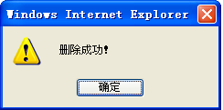 |
|
|
| 选中你想要修改的菜品，在对应的操作列中选择“修改”，弹出修改输入框，填入新的“菜名”、“价格”，并选择新的“厨房”，选择“确认”，会员中心弹出提示框提示修改功能，如下图所示： |
| 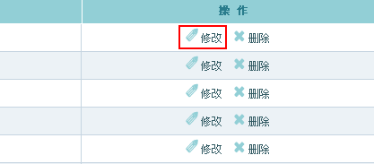 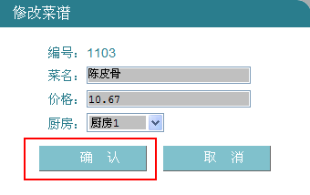 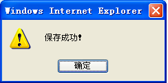 |
提示：
修改菜谱的时候，编号是不能修改的，如果想改变菜品的编号，请先删除，然后再重新添加噢：-） |
|
|
| “菜谱管理”提供了多种的查询方式，让您轻松可以找到想要的菜品，在“过滤”下拉框中选择一种查找方式，输入查询数值，再选择“搜索”，如下图所示： |
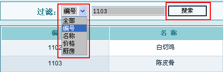
根据不用的需要，可以选择不用的查询方式，每种查询方式如下表所示： |
| 查询方式 |
说明 |
例子 |
| 编号 |
按菜品编号精确查找 |
输入“1100”，精确查找编号等于“1100”的菜品 |
| 名称 |
按菜品名称模糊查找 |
输入“骨”，查找出含有“骨”字的菜品，比如“京都骨”、“陈皮骨”
|
| 价格 |
按价格“大于等于”、“小于等于”和“等于”查找 |
选择“大于等于”，输入23.5，查找出价格大于等于￥23.5的菜品 |
| 厨房 |
按“厨房”进行查找 |
选择“厨房1”，查找出属于“厨房1”的菜品 |
|
|
菜谱管理中，除了一般的“增”、“删”、“改”、“查”外，还有另外一项非常有特色而且实用的功能――“点菜排名”，选择“点菜排名”，在弹出框中就可以清晰的查看到有历史记录以来点菜排行情况。让您轻松知道餐厅里头哪些菜品最受顾客欢迎啦。如下图所示：
|
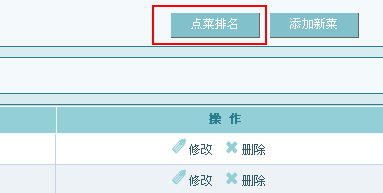 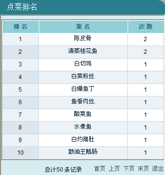 |
|
选择“账单管理”，显示账单管理的功能界面。在“账单管理”中，您可以- 浏览餐厅目前账单的详细信息
- 删除账单
- 按条件查找账单
- 查看账单的日结、月结汇总
如下图所示： |
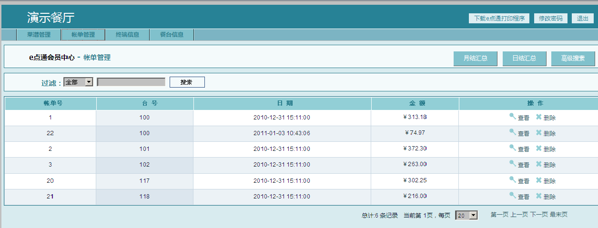 |
| 提示：目前e点通会员中心为您保存了3个月的账单信息，超过3个月的账单信息会被系统自动删除的喔：-） |
|
|
| 除了能够在“账单管理”的浏览区内快速浏览每条账单的记录外，还能够选择“操作”列中的“查看”，来查看账单更详细的信息。在账单的详细信息中，您可以清晰的看到每张账单的日期，服务员，所点菜品和金额等等所有的信息，如下图所示： |
| 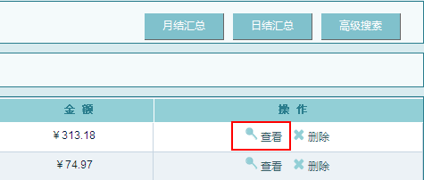 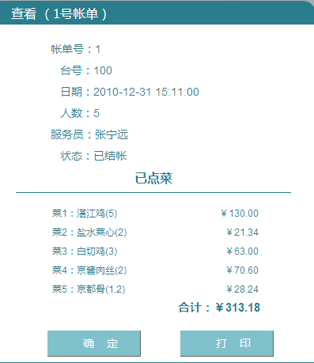 |
|
|
| 您可以选择删除没有用的账单，在“操作”列中选择“删除”，弹出确认提示框，选择“确定”，会员中心弹出提示框提示删除成功，如下图所示： |
| 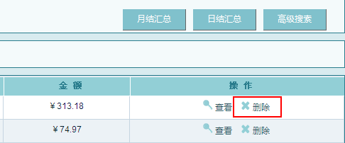 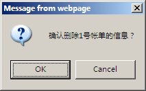 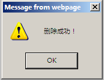 |
| 提示：删除账单后是无法恢复的，所以在删除前请确认好时候是否真的要删除喔：-） |
|
|
| “账单管理”提供了多种的查询方式，可以让您轻松快捷的找到需要的账单信息。“账单管理”中的查询分为两大类：下面就分别介绍这两种查询的使用方法。 |
|
2.4.3.1 一般查询 |
| 一般查询提供了4种的查询方式，您可以选择按“帐单号”、“台号”、“日期”或者“金额”来进行查询。在“过滤”下拉框中选择其中一种查询方式，填入查询的数值，选择“搜索”，如下图所示： |
| 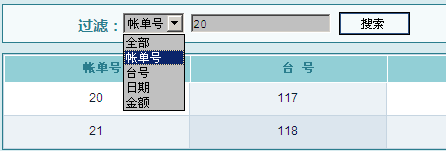 |
| 根据不同的需要，您要选择不同的查询方式，每种查询方式如下表所示： |
| 查询方式 |
说明 |
例子 |
| 帐单号 |
按帐单号精确查找 |
输入“20”，精确查找帐单号等于“20”的账单 |
| 台号 |
按台号精确查找 |
输入“115”，精确查找所有台号是“115”的账单 |
| 日期 |
按日期“大于等于”、“小于等于”和“等于”查找 |
选择“大于等于”，输入“2010-12-25”，查找所有结帐日期是“2010-12-25”之后的账单 |
| 金额 |
按金额“大于等于”、“小于等于”和“等于”查找 |
选择“大于等于”，输入“325”，查找所有结帐金额大于等于“￥325”的账单 |
2.4.3.2 高级搜索 |
| 除了一般的查询方式，“账单管理”还提供了更加高级的查询功能，让您可以更加灵活的找到需要的账单。选择“高级搜索”，填入需要的查询数值，选择“确定”，如下图所示： |
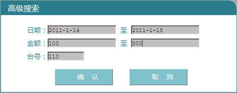 |
下面我们举几个例子来说明一下“高级搜索”的使用： |
例1：我想查询2011年1月份的所有账单，填入“高级查询”如下图所示： |
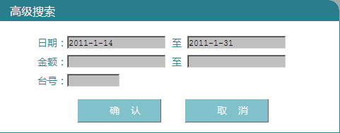 |
例2：我想查询2011年1月份的所有账单，并且结帐金额是“￥100 ～ ￥300”，填入“高级查询”如下图所示： |
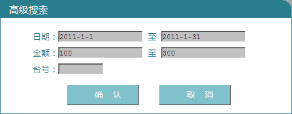 |
例3：我想查询“110”号台，在2011年1月份的所有账单，并且结帐金额是“￥100 ～ ￥300”，填入“高级查询”如下图所示： |
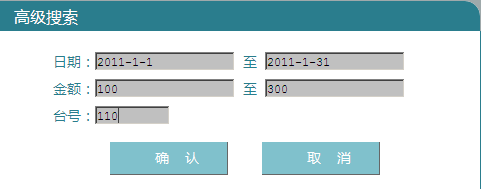 |